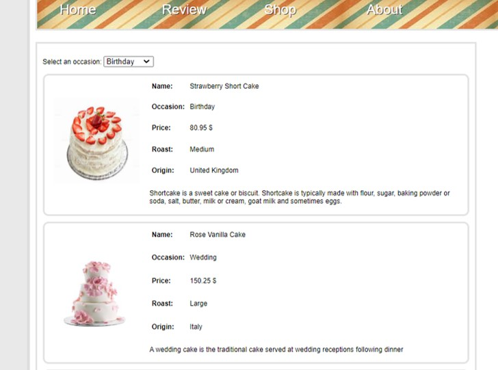
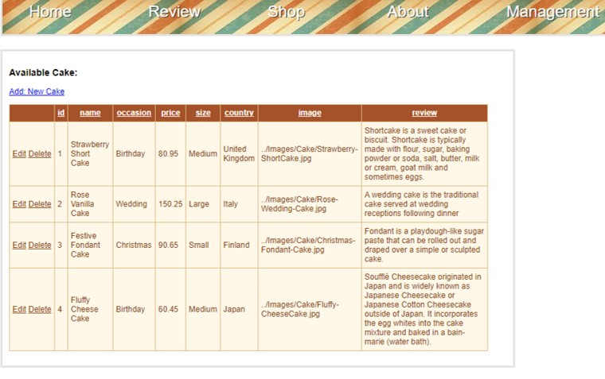
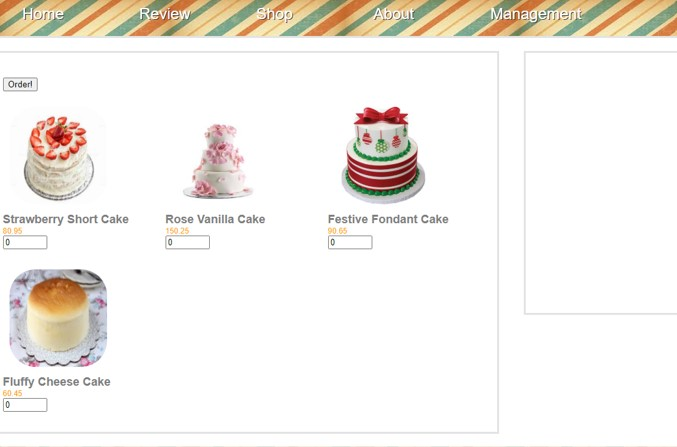

Project 3
Online Shopping Website
Another side project that I have been working on is building and hosting an online shopping website through the ASP.Net Platform in Visual Studio. When creating an online shopping website, many elements come into play such as the programming language used, which are C#, HTML, PHP, Javascript and some basic SQL for database is utilized when developing a website. The website created is to perform simple online cake shopping for the customers and displays a list of cakes availble to be chosen from. As I am also new when it comes to web development, I have also done some research on how to host the website on IIS. The following shows the basic features of the online cake shopping website.
Similar to the library management system, it also utillizes a database but for this website, it is using Microsoft SQL Management Studio to store all the information of the cakes available for the customers and displayed the website for the customers. The customers can use the drop down list to search for the types of cakes based on the occasion such as birthdays or weddings.
For the management team, it shows the database of cakes available and allows the team to add a new cake into the database or to update and delete any old information of the cakes available.
The main feature of the online shopping website is that it allows the customers to purchase the cakes from the selection displayed on the interface. From there, the customers will key in the amount of cakes that he or she wished to purchase and if any other values are keyed in an error message will be displayed to prompt the users to key in numbers only.